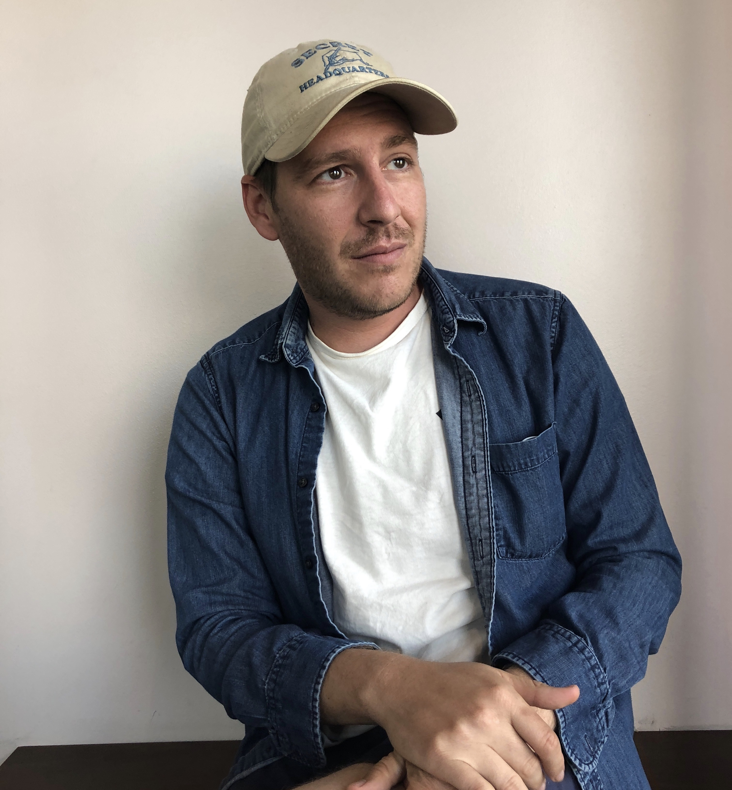

About

I'm a creative strategist and producer.
My work sits where brand ambition meets culture: documentary and branded content, original formats, and the strategy that gives each one a reason to exist beyond the pitch.
Across work for Google Arts & Culture, Nutella, and Honda, and original formats of my own, the throughline holds. Find the honest human story inside a brief, protect it through production, and let the brand earn its place instead of announcing it. I've worked as a writer, a creative producer, and a format creator, often as part of a team, and I try to name what I actually owned. When I'm not producing, I write criticism about play, aesthetics, and the culture this work draws from.